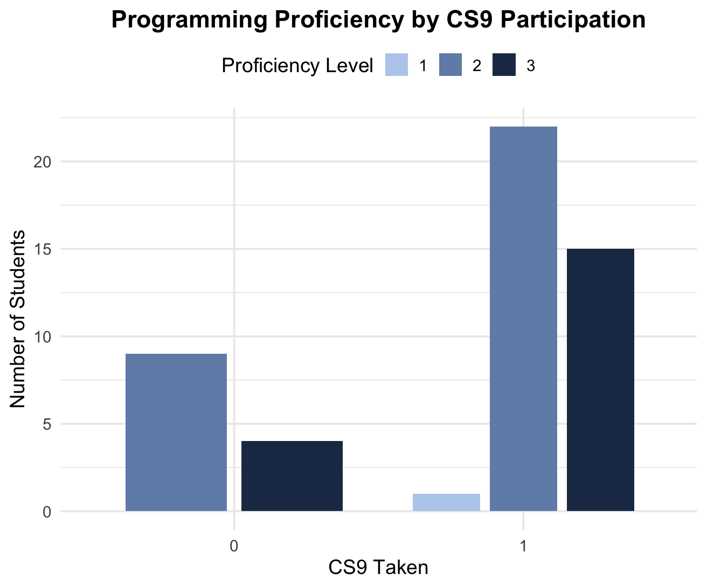

| Research_Participation | Mean_Domains | Variance_Domains | N |
|---|---|---|---|
| Participated | 3.843750 | 2.587702 | 32 |
| Did not participate | 3.647059 | 1.617647 | 17 |
Analysis of class surveys
Table 1
Executive summary
We took the data from the PSTAT 197A capstone survey and sought to find if there were any correlations and connections in the data that may help us better understand the students taking the capstone. We used R to do our data analysis and came up with guiding questions that directed our research. Our findings are summarized in this document.
Data description
The dataset was obtained from a survey that all 2025 Fall Quarter PSTAT 197A students completed. Personal identifying information was removed to ensure anonymity. Students were asked about classes they took, whether they have done research, what year they were, what preference for projects they have, etc. Students were informed that this data would be used by the class, and had the option to opt out of being in the dataset.
Questions of interest
We sought to understand the relationship between coursework and a student’s proficiency/curiosity. Our analysis addressed three questions:
- Is there a relationship between any variable and a student’s neutrality or preference for a research project?
- Does taking CMPSC 9 (Intermediate Python Programming) or CMPSC 16 (Problem Solving with Computers I) have any relation to self rated proficiency level in coding?
- Do people who have done research have more or less domains of interest compared to people who have not done research?
Findings
Question 1: Is there a relationship between a student’s neutrality or preference for a research project?
To answer this question, we merged the two separate datasets of background and interest attributes. Our target variable was projtype, from the background dataset. We re encoded it into a binary response of 0 indicating an industry preference, and 1, indicating no preference or a preference for research.
Since we were dealing with categorical variables, we created contingency table for each variable that compares its responses with the target variable. Then, a Chi-squared test is ran to check for significant association. For counts less than five, a Fisher’s exact test was used.
Finally, we printed the subset of variables that had a p-value of < 0.05 (which indicated a significant association with a preference for research vs industry). This is the table we acquired:

The type variable from the interest dataset was not available in the metadata, with the target variable projtype being the only seemingly related one. type originated from the interest dataset, and had responses of “both, ind and lab”. These seemingly correspond to the responses for projtype, so we believed it was fair to assume that type is a duplicate variable of projtype. Thus, we proceeded by analyzing the variables updv.num and lang.
The more significant of the two was updv.num (which corresponds to the amount of upper division PSTAT classes students have taken). We created another frequency table in order to see which responses to the number of upper division classes taken question corresponded to a preference/indifference towards research.


These results must also be considered with the frequency of each response for updv.num, displayed in the table below:
Due to largely varying sample sizes above, It’s difficult to draw conclusions by examining the frequency table/bar chart for classes taken and research preference.
The second most significant variable was lang (corresponding to which programming language the student prefers). We created another frequency table in order to see which responses to the preffered languages question corresponded to a preference for research or not.

lang had slightly more uniform sample sizes, allowing us to ultimately conclude that students who prefer R prefer/are indifferent to research projects.
Question 2: Does taking CMPSC 9 (Intermediate Python Programming) or CMPSC 16 (Problem Solving with Computers I) have any relation to self rated proficiency or comfort ability level in coding?
To analyze this question, we divided it into different parts. We compared each course (CMPSC 16 and CMPSC 9) individually in relation to self rated programming proficiency in comfort levels. This resulted in the creation of 4 distinct datasets, each including a binary variable displaying whether the class was taken (0=not taken, 1=taken) and another including the self rated proficency or comfort level. Proficiency was originally on a character scale of beginning, intermediate, and advanced, which we then converted to the numeric scale of 1, 2, and 3. Comfort level was a scale of 1 to 5, 1 being the least comfortable and 5 being the most.
For each dataset we found the correlation between the course taken and proficiency/comfort. We also performed a chi-squared test, as we were finding the relationship between categorical variables. The results are summarized below below:
Dataset 1: CMPSC 16, prog.prof
Correlation coefficient: .19
P-Value of Chi-Squared Test: .34
Dataset 2: CMPSC 9, prog.prof
Correlation coefficient: .05
P-Value of Chi-Squared Test: .69

Dataset 3: CMPSC 16, prog.comf
Correlation coefficient: 0.37
P-Value of Chi-Squared Test: .0.99

Dataset 4: CMPSC 9, prog.comf
<<<<<<< HEAD
7d1cfe3d34d0e6b45bf7bc9a4a43bb9e58e7d17f - Correlation coefficient: -0.17
- P-Value of Chi-Squared Test: .99
- From our tests, we found no significant relationship between self rated programming proficiency and whether each course was taken or not. Both classes have very weak positive correlations with proficiency, and their p-values > .05 indicated that the relationship is not significant. Additionally, both courses show weak correlations with self-rated programming comfort; CMPSC 16 exhibits a small positive relationship, while CMPSC 9 shows a slight negative relationship. However, all p-values exceed 0.05, indicating that none of these associations are statistically significant. In summary, there is no meaningful evidence that taking CMPSC 9 or CMPSC 16 has a significant impact on students’ self-rated programming proficiency or comfort level.
Question 3: Do people who have done research have more or less domains of interest compared to people who have not done research?
In order to investigate this question, we first started by combining the background and interests datasets and filtering for students that marked ‘Yes’ and ‘No’ for whether they had research experience. After, we calculated summary statistics on these two groups, particularly, the mean, variance, and n, of number of domains of interest, and got the following:
To further get a better idea of the two distributions, we plotted bar charts of the domains of interest:


We found that the mean number of domains of interest between students who have participated in research versus those who have not are similar in value, with the variance of the research group being higher. This higher variance could stem from the fact that there are more individuals who had done research (around double). Additionally, looking at the two distributions, those who had done research had more of a bell shaped curve, skewed to the right, with a peak at 3 domains of interest. On the other hand, those who had not done research had almost a ‘uniform’ distribution, with equal number of students choosing 2, 3, 4, and 5 domains of interest.
Lastly, we conducted a t-test to see if there was a statistically significant difference between the two means of domains of interest.
| estimate | estimate1 | estimate2 | statistic | p.value | parameter | conf.low | conf.high | method | alternative |
|---|---|---|---|---|---|---|---|---|---|
| 0.197 | 3.844 | 3.647 | 0.469 | 0.642 | 39.883 | -0.651 | 1.045 | Welch Two Sample t-test | two.sided |
We got a p-value of 0.6418, which is greater than 0.05 (alpha level), thus we conclude there is no significant difference between the two means.
In conclusion, we found that students who have participated in research have the same number of domains of interest compared to those who have not participated in research.